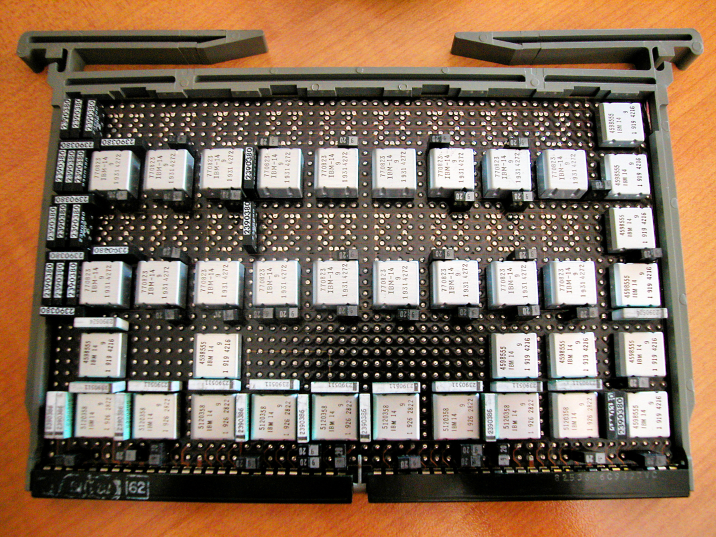
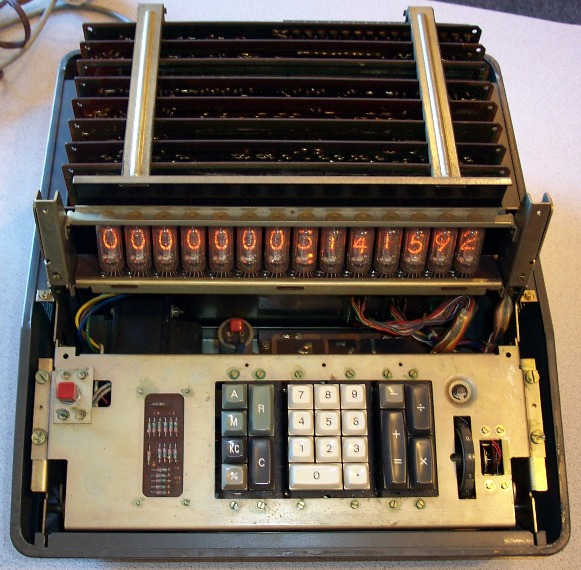

Транзисторная память
Изобретение МОС транзисторов (металл-оксид-полупроводник) М. Аталлой и Д. Кахном в 1959 г. привело к развитию МОС-памяти, которую разработал Джон Шмидт из Fairchild Semiconductor в 1964 году. Данный тип памяти, помимо более высокой производительности, оказался дешевле и потреблял меньше энергии чем ферромагнитная память. И после разработки в 1968 Федериком Фаггином из Fairchild самовыравнивающегося затвора для МОС, стало возможно производство МОС чипов.
Интегрированная Статическое ЗУПВ (SRAM) было изобретено Робертом Норманом из Fairchild Semiconductor в 1963 году. После этого Роберт Шмидт изобретает МОС SRAM в 1964 году. SRAM стала настоящей альтернативой ферромагнитной памяти, но требовала по 6 транзисторов на каждый бит информации. Коммерческое использование SRAM началось лишь в 1965 году, когда IBM представила чип SP95.

Динамическая ЗУПВ позволяла вместо 6 использовать всего 1 транзистор на каждый бит информации, тем самым была более экономичной и компактной нежели SRAM. Память хранилась в малом объеме на каждом транзисторе и должна была их периодически заряжать. Электронный калькулятор BC-1411 от Toshiba, представленный в 1965 году, одним из первых использовал DRAM объемом в 180 бит. В то время как DRAM превосходила ферромагнитную память в производительности, она не могла соперничать в сегменте цены.

Но технология МОС стала базисом для современных DRAM. В 1966 году, доктор Роберт Дейнард из IBM работал над транзисторной памятью. Во время своих исследований, Роберт обнаружил, что конденсаторы, в заряженном или не заряженном состоянии, могли представлять 1 или 0 определенного бита соотвественно. И МОС мог бы контролировать состояние доннах конденсаторов. Это открытие привело к развитию однотранзисторной ячейки памяти DRAM. В 1967 году Дейнард от имени IBM создал патент на данную технологию. Первым коммерческим чипом DRAM 1с (однотранзисторная) был Intel 1103, который производился по 8 нм МОС процессу, объемом в 1 Кб и выпущенный в 1970 году.
Синхронно-динамическое ЗУПВ (SDRAM) было изобретено Samsung Electronics. Первым коммерческим SDRAM чипом стал Samsung KM48SL2000 объемом в 16 Мб, выпущенный в 1993 году. На рынок DDR SDRAM (SDRAM с удвоенной скоростью передачи данных (Double Data Rate)) вышла 1998 году тоже от Samsung и имела память в 64 Мб. В 1998 эта же компания представила первую GDDR (Graphic (графическая) DDR SGRAM) объемом в 16 Мб.